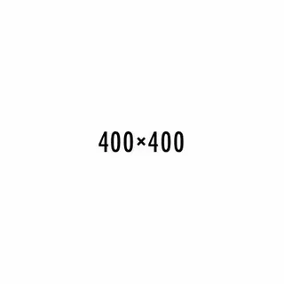

Картинка №1
Демонстрация адаптивных изображений
Современные техники responsive images в действии
1. Базовое адаптивное изображение
Что происходит:
- Изображение занимает 100% ширины контейнера
- Высота автоматически рассчитывается для сохранения пропорций
- Работает на всех устройствах
- Lazy loading для оптимизации загрузки
2. Picture element с форматами
Что происходит:
- Браузер выбирает лучший формат (WebP или JPEG)
- WebP на 25-35% меньше по размеру при том же качестве
- Автоматическое переключение между форматами
- Фолбэк для старых браузеров
3. Разные изображения для разных экранов
Что происходит:
- Десктопы (1200px+): wide-desktop.jpg - 1200px
- Планшеты (768px-1199px): tablet.jpg - 800px
- Мобильные (до 767px): mobile.jpg - 400px
- Браузер сам выбирает подходящее изображение
- Экономия трафика на мобильных устройствах
4. Поддержка Retina дисплеев
Что происходит:
- Обычные экраны: icon@1x.png (96dpi)
- Retina экраны: icon@2x.png (192dpi+)
- Автоматическое определение плотности пикселей
- Четкое отображение на высокоплотных дисплеях
5. Object-fit свойства

object-fit: cover
Что происходит:
- cover - заполняет контейнер, обрезая края (идеально для галерей)
- contain - вписывает полностью, могут быть поля (сохраняет пропорции)
- fill - растягивает, искажая пропорции (используется редко)
6. Адаптивная галерея
Картинка №2
Картинка №3
Картинка №4
Что происходит:
- На десктопах: 4 изображения в ряд
- На планшетах: 2 изображения в ряд
- На мобильных: 1 изображение в ряд
- Поддержка Retina дисплеев через srcset
- Lazy loading для оптимизации производительности